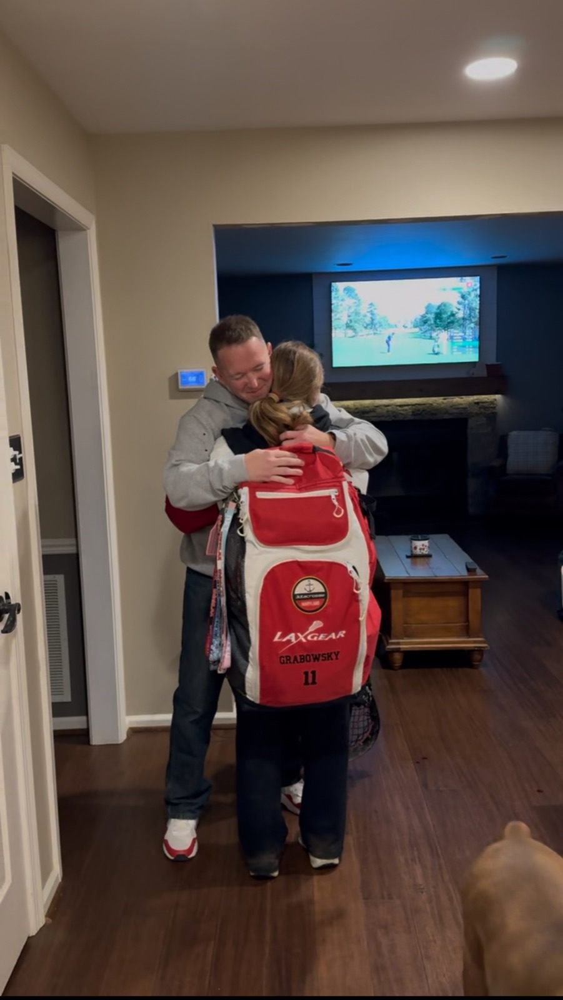

During my freshman year of high school, my father, who is a Lieutenant Colonel in the Marines, got orders to deploy to Australia for 6 months. At first, I was crushed, and my family took a hard hit from it because a few days later, my childhood dog died. All this, combined with the pressure and stress of being a student and athlete without having one of the most important figures in my life, should have crushed me. But it… Didn't?
I made the Varsity lacrosse team and got straight A's and made so many new friends, which essentially distracted me from the fact that my dad couldn't be there. All my new friends, my mom, and my coaches were incredibly supportive and listened to me whenever I needed to talk. Shout out to my Assistant Coach on my high school team, who really understood what this was because he also grew up in a military family.
My dad ended up coming home a month early because he needed knee surgery. I learned a lot during those short 5 months, but the main thing I learned was how to overcome something that I never thought I could overcome. Another thing I learned was the importance of communicating my thoughts and feelings with other people and not holding them in until I get to a breaking point.
Difficult moments in your life are much easier to endure when you have people around you to support you and who understand what you are going through. Situations that seem like impossible mountains to trek are much easier to overcome with the help of others. Sometimes, the people around you can help you carry the weight that might seem overwhelming.
Although my dad was thousands of miles away, I realized that support can still exist in many forms and that friends, family, coaches, and teachers can be an incredible resource for you to lean on when life feels overpowering.
Support
Resources & Support
If this story resonated with you, these resources may help support students, athletes, and military families navigating stress, grief, separation, identity, and emotional wellbeing.
Broad Shoulders Initiative is not a crisis service, medical provider, or therapy provider. If support feels urgent, please contact emergency services, a trusted adult, a school counselor, or a licensed professional.